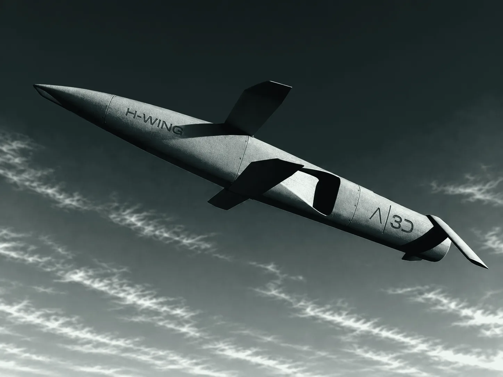
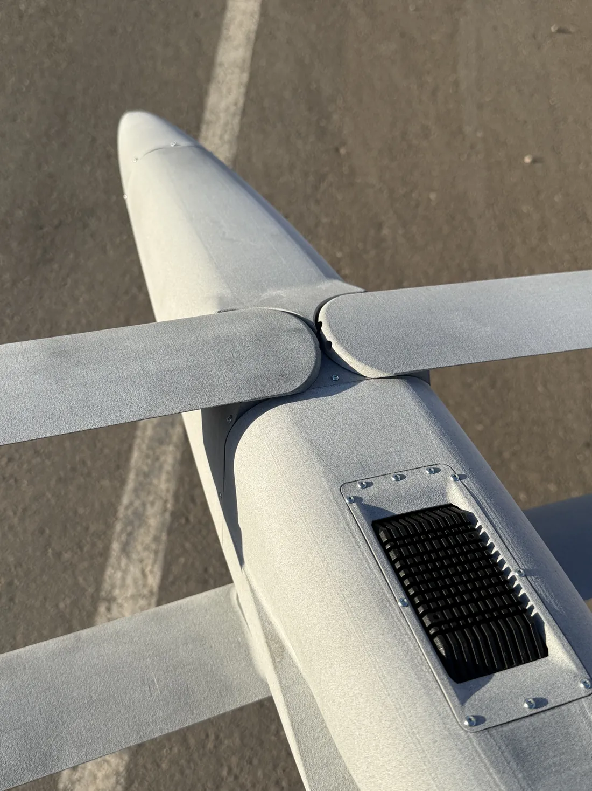
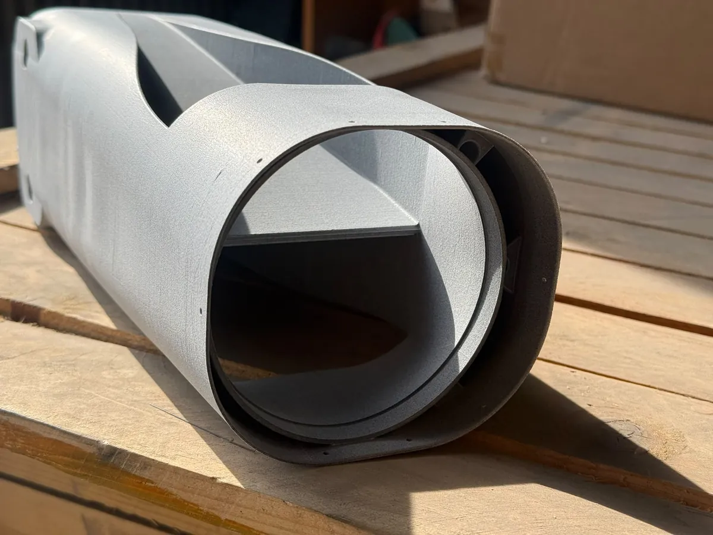
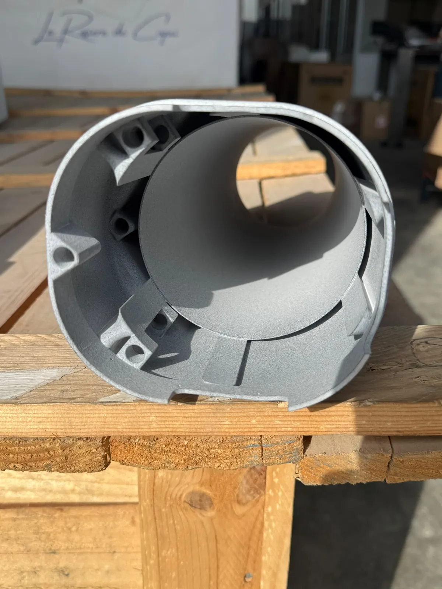
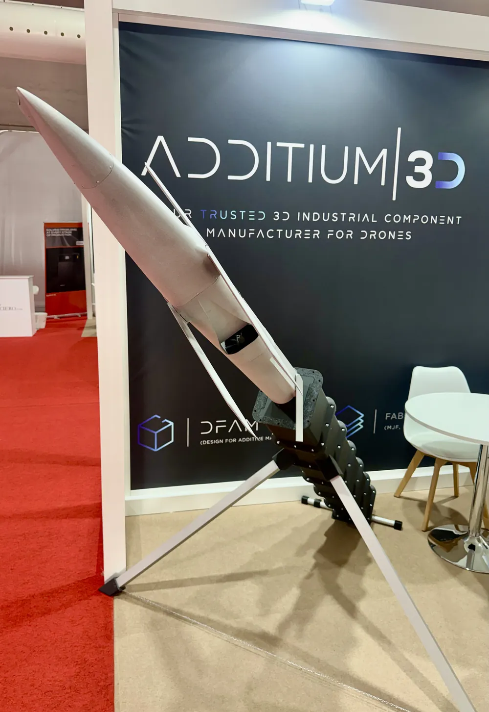
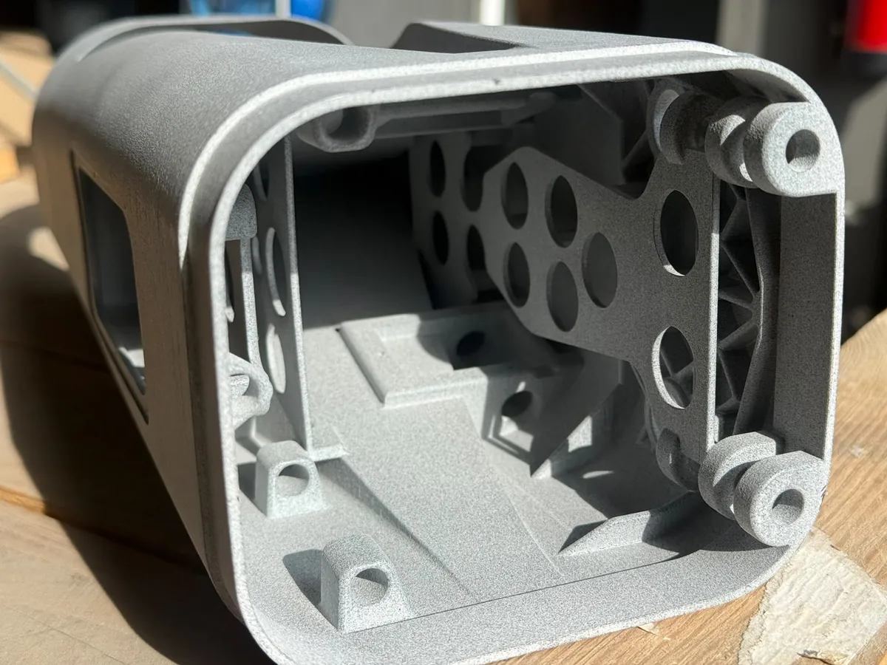
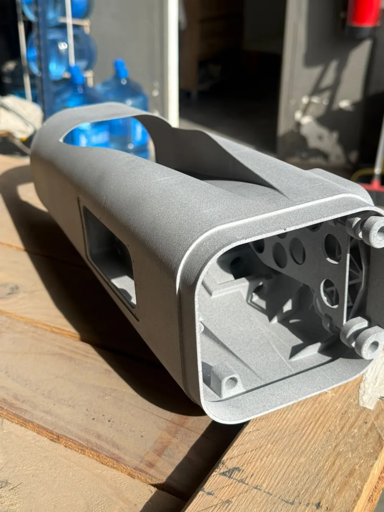
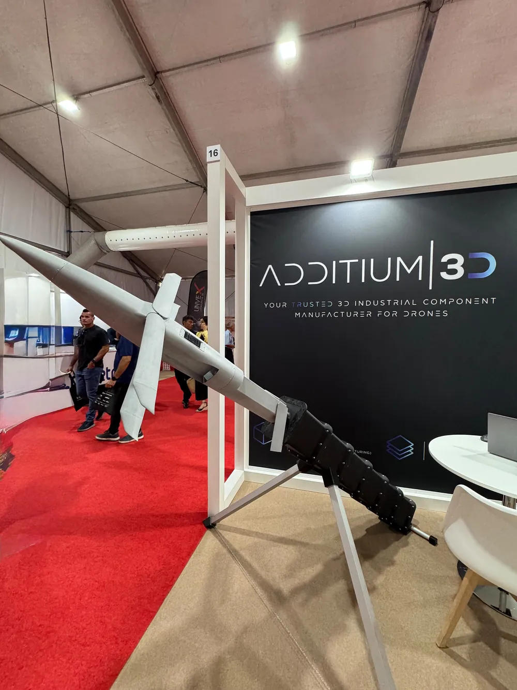
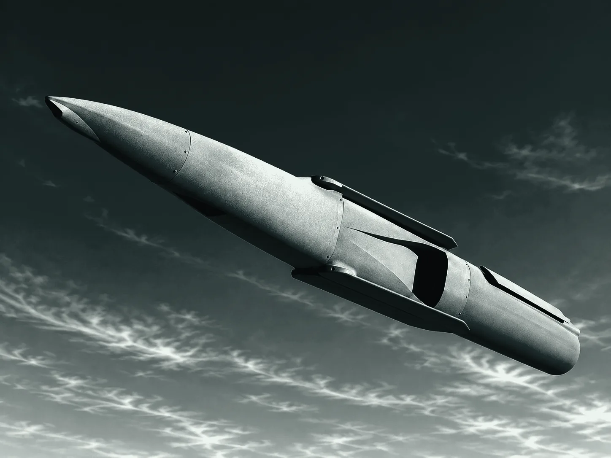
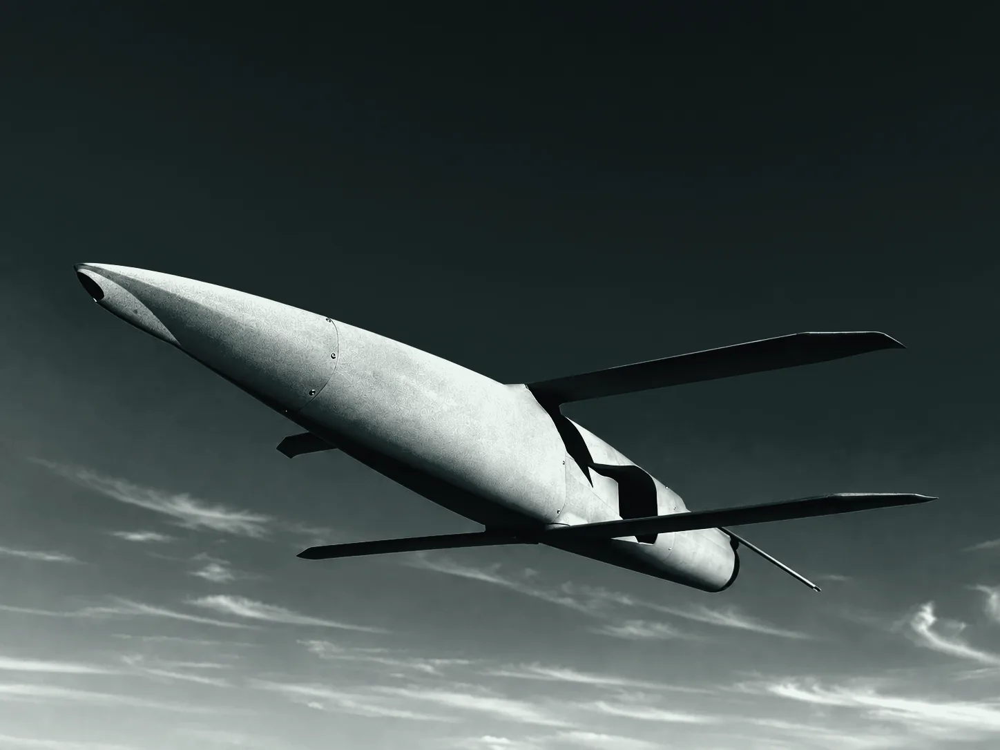

100%
de la estructura, impresa en MJF con PA12S. Ninguna pieza estructural fabricada por otra vía.

Render conceptualAdditium3D · Demostrador tecnológico
Un UAV completo, impreso al 100 % en MJF.
Estructura, bisagras y alojamientos salen de la misma máquina. Dos aeronaves por cuba. Sin moldes ni utillaje.
01 · En cifras
Estructura, bisagras y alojamientos se imprimen juntos, sin moldes ni utillaje. En una sola cuba caben las piezas de dos aeronaves completas.

de la estructura, impresa en MJF con PA12S. Ninguna pieza estructural fabricada por otra vía.
verificada en piezas que hemos fabricado y ensayado nosotros mismos.
aeronaves completas, con todas sus referencias, en una sola cuba de 380 × 284 × 380 mm.
y cinco iteraciones hasta tener una aeronave completa fabricada y ensamblada.
02 · Fabricado en nuestra planta
Pulsa para ampliar · desliza →

Fabricado
Fabricado
Fabricado
Fabricado
Fabricado
Fabricado
Fabricado03 · De la cuba al dron
Pensado desde el primer trazo para MJF: fuselaje en cuatro partes anidables, bisagras integradas y rigidización de carbono prevista.
Dos aeronaves completas, con todas sus referencias, en una sola cuba de 380 × 284 × 380 mm. Un ciclo y cero utillaje.
Las cuatro partes encajan, las bisagras ya vienen impresas en la pieza y la varilla de carbono entra en el alojamiento diseñado para ella.
Alas y empenaje plegables: un cilindro compacto para el canister y la configuración abierta al desplegar.
04 · Plegado ↔ Desplegado
Arrastra para abrir el H-WING: compacto para lanzarlo desde canister, completo cuando se despliega.


Alas, empenaje y alerones salen de la impresora ya montados y con el movimiento permitido: las bisagras se imprimen articuladas dentro de la propia pieza. No hay nada que ensamblar para que se muevan.
Pensado para lanzamiento desde canister: las secciones de fuselaje se anidan en la cuba y se encajan después.
Lo imprimimos también nosotros, en FDM con ABS-GF, para validar el sistema completo y no solo la aeronave.
05 · Límite de pared
El MJF nos deja bajar la pared hasta 0,5 mm en piezas que hemos fabricado y ensayado nosotros. Ahí es donde el polvo le gana peso a la fibra: estructura ligera sin laminado y sin molde.
La rigidez la ponen la geometría y una varilla de carbono alojada desde el diseño: la pared fina trabaja exactamente donde tiene que trabajar.
Es un terreno que la propia industria reconoce como especial: el fabricante de la tecnología publica recetas de proceso específicas para paredes de 0,3 a 0,9 mm.
Valores orientativos de diseño seguro, no el límite absoluto de cada proceso: varían con el material y la geometría.
06 · Por qué MJF
HP Multi Jet Fusion funde el polvo capa a capa con agentes de impresión y calor. Sin soportes, sin molde y con propiedades casi iguales en los tres ejes.
Vídeo · 1:11
Fusi es la HP MJF 5620 de nuestra nave en Beniparrell. Mírala convertir polvo en piezas finales: extiende, dibuja, funde y repite.
Canales internos, celdas cerradas y conjuntos consolidados: el propio polvo sostiene la pieza mientras se imprime.
Casi sin dirección débil de capa. Es la condición para fiar estructura a la aditiva, y no solo carcasas.
Sin marcas de capa; se tinta, granalla o vaporiza sin retoques.
La pieza 1 y la 500 son iguales: ±0,25–0,45 mm en toda la cámara de 380 × 284 × 380 mm.
07 · Lo que se consigue
Estructura ligera sin laminado ni molde, con la pared verificada en piezas nuestras.
Una bisagra o un cierre que sale de la máquina ya montado y funcionando. Lo que era un conjunto es una sola referencia.
Lattice, nervado isogrid y celdas internas. Gracias a MJF hay casos, como un kit UAV rediseñado con DfAM, en los que se han eliminado 425 g: el 29 % de su peso.
Dos aeronaves por cuba y producción continua 24/7. Duplicar la producción es añadir cubas, no comprar un molde.
Juego completo de 25 referencias en PA12S (1,5 kg) y 0 € de utillaje. Precio de tanda de fabricación desde el primer pedido.
Una tanda en 3–6 días. El H-WING pasó por cinco iteraciones en seis semanas.
08 · Tiempo
Un molde de inyección tarda de 4 a 6 meses en dar la primera pieza buena, y cada cambio de geometría pone el reloj a cero. En composite de carbono, cada cambio pide utillaje, laminado y curado nuevos: unos 50 días por vuelta. Una iteración nuestra —rediseño, impresión y ensayo— son quince días.
H-WING: cinco iteraciones y una aeronave completa en seis semanas.Valores medios; cada proyecto se presupuesta con su archivo real.
Dentro de cada tirada
La tecnología permite dividir una tirada en franjas de altura y probar en cada una una configuración de proceso distinta: térmica, agentes, capa. Se comparan las piezas y se elige la mejor receta sin gastar cinco tiradas.
09 · Frente a composite
No es MJF contra carbono. La fibra de carbono tiene una rigidez por kilo extraordinaria, y el H-WING la aprovecha. Cada material hace su trabajo.
El PA12 impreso en MJF da la forma y el soporte: cada componente tiene su alojamiento en el propio fuselaje. Las varillas de carbono dan la rigidez, y solo van donde hace falta. Sin moldes y sin laminado.
Esquema ilustrativo.
El ala, por partes
Sin moldes que amortizar ni horas de laminado manual. Entre 2 y 3 veces menos coste por estructura en series cortas y medias. La primera unidad no necesita inversión previa.
Del archivo a la aeronave en días, no en semanas de fabricar moldes. Dos drones completos por cuba y montaje en menos de 10 minutos.
Escalar un laminado exige más moldes y más mano de obra cualificada. En MJF bastan más ciclos de impresión, y cada unidad sale idéntica a la anterior.
Cambiar el diseño es cambiar el archivo. El H-WING pasó por 5 iteraciones en 6 semanas hasta tener una aeronave completa, fabricada y montada. La pieza que se prueba es la que se fabrica en serie.
Montajes internos y alojamientos para cada componente, impresos en el propio fuselaje. Paredes de solo el material necesario y secciones anidadas: menos material, menos piezas y menos montaje.
La fibra de carbono es conductora y bloquea la señal de radio. El PA12 es transparente a la radiofrecuencia: las antenas de GNSS, enlace de datos y vídeo van dentro del fuselaje, protegidas y sin penalizar la aerodinámica.
No es un dron más. Es lo que ocurre cuando se diseña pensando en cómo se va a fabricar desde el minuto uno.
Esto mismo lo llevamos a proyectos en el aire, en tierra y en el mar.
Reserva 30 minutos10 · Diseñar para MJF
Orientación, espesor y separación se deciden en el diseño. Nuestras reglas de cuba, pared fina y defectos, en una guía aparte.
Ver la guía de diseño11 · Ficha técnica
12 · Siguiente paso
Treinta minutos con nuestro equipo técnico: te enseñamos cómo pensamos el H-WING y cómo llevar tu diseño a MJF. Sin coste y sin compromiso.
NDA antes que nada: lo firmamos antes de ver tu primera especificación.